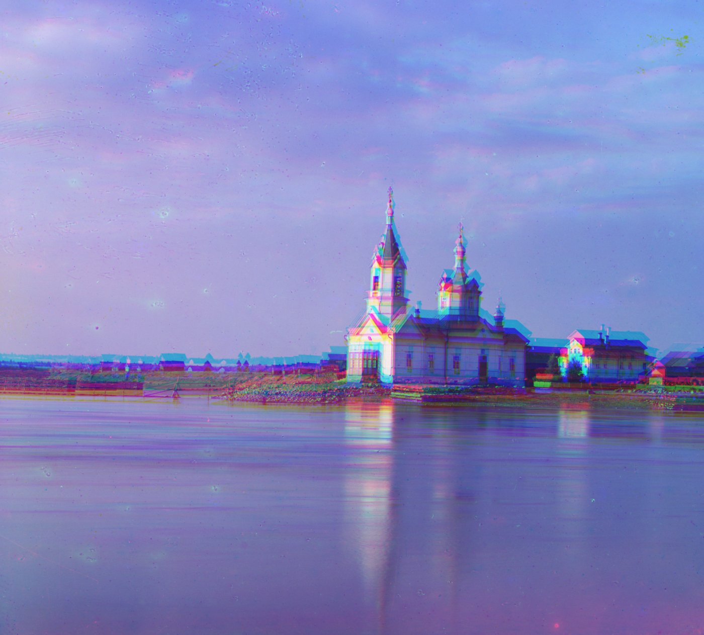
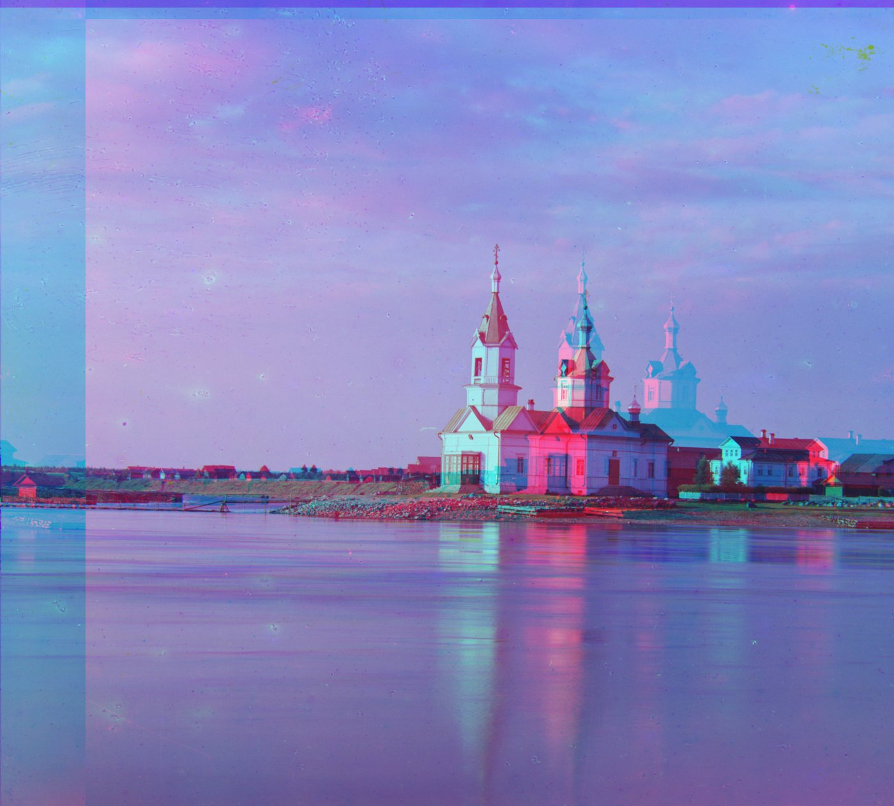
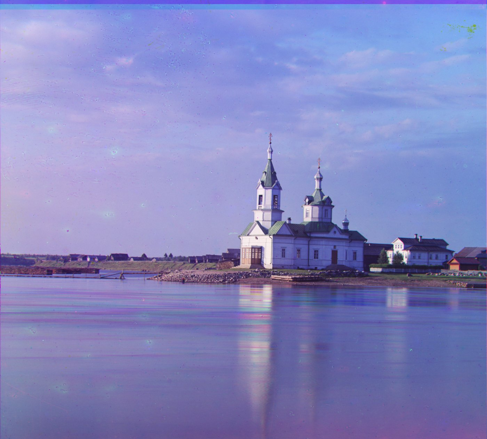
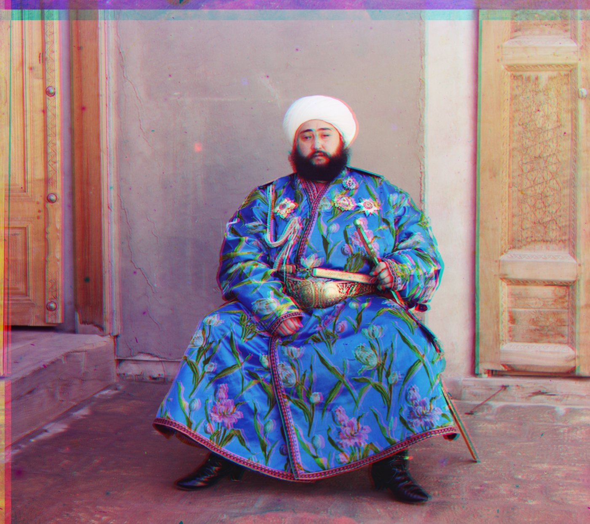
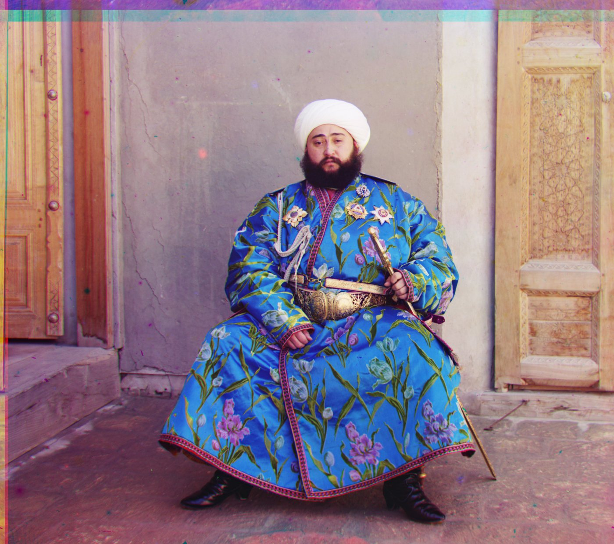

This project reconstructs color photographs from Prokudin-Gorskii’s digitized glass-plate images. Each image contains three grayscale exposures taken through blue, green, and red filters. By separating, aligning, and combining these channels using image matching and a multi-scale pyramid, the program produces a single color image with minimal visual artifacts.
Each glass plate is one grayscale image containing three stacked exposures (B-G-R). Simply dividing the plate into three channels(pictures) and stacking the channels directly gives a badly misregistered image. Since the plate holder shifted slightly between exposures, so each channel needs its own small translation at each step to line back up.

To decide whether a candidate shift counts as effective or "aligned," every offset tried during the search needs a similarity score comparing the shifted channel against the fixed reference channel. Two metrics are implemented, and comparing how they actually behave turned out to be one of the informative parts of this project.
Each patch has its mean subtracted and is rescaled to unit length, then the two normalized patches are compared with a dot product — closer to 1 means more similar.
L2 Norm sums the squared per-pixel difference between the two patches and lower means more similar. However, since it compares raw pixel values, differences in brightness and contrast can throw it off. In images with large, mostly uniform areas, such as the sky and water in church.tif or the forest in suna.tif, these regions can dominate the score. As a result, the algorithm may find a shift that matches the background numerically while leaving important details, like buildings or trees, visibly misaligned.


Normalizing the images before computing L2 solves this problem. Once both images are normalized, minimizing L2 is mathematically equivalent to maximizing NCC: ‖v1−v2‖² = 2 − 2(v1·v2). This is why pyramid + L2 and pyramid + NCC produce nearly identical shifts in the results below.
For each of the green and red channels, I search every integer shift in a ±15 pixel window against the blue channel (the fixed reference) and keep whichever shift scores best under one of the similarity metrics described above. Shifting is done by translating the array and wrapping whatever falls off one edge onto the opposite edge, so both images are cropped by a margin before comparison to keep that wrapped strip out of the score.
To reach large shifts without an enormous search window, I build an image pyramid by repeatedly downsampling by 2× until the image is under 300px on its longest side. Then align coarse-to-fine: search a wide ±15 window at the coarsest level, double the resulting shift as the estimate for the next (2× larger) level, and refine with a narrow ±3 window at every level after that. This turns an exhaustive search over a huge displacement into a handful of cheap small searches.
1. Wrap-around during pyramid refinement. When an image is shifted with np.roll, pixels that move past one edge reappear on the opposite side. At finer pyramid levels, the algorithm searches around the displacement estimated at the previous level. However, I initially excluded only the small local search window from the comparison, allowing wrapped pixels caused by the larger accumulated displacement to affect the score. I fixed this by excluding a border large enough to cover the full displacement tested at each level.
2. [Efficiency] Using the same search window at every pyramid level. My initial implementation searched within ±15 pixels at every level, including at full resolution. This was unnecessarily expensive because the coarser levels had already produced a good estimate. I improved efficiency by using ±15 only at the coarsest level and reducing the search window to ±3 at each finer level.
All 17 images (14 provided + 3 chosen on my own: dam, suna, vItali), run through all four method × metric combinations. Switch tabs to compare. Each caption shows the recovered (row, column) shift for the green and red channels relative to blue, and time used to align.
Same normalized-L2 metric as NCC after preprocessing — results match the NCC tab almost shift-for-shift (see Metrics above for why).
Single-scale search is capped at ±15px. Most .tif scans need 50–180px, so shifts pinned at exactly ±15 below are the search window maxing out, not a correct answer — expected, per the assignment's own note that single-scale is assumed satisfied once the pyramid method works.
Same ±15px ceiling as single-scale NCC above.
Two independent choices affect run time: which metric scores a candidate shift, and which search strategy (single-scale vs. pyramid) decides which shifts to try. All numbers below are averaged over the 14 .tif images, timing both the green and red channel alignment together.
Barely matters for speed. L2 does one subtract-and-square per pixel where NCC does one multiply so that 2 metrics are close enough.
This is where the real difference is. A single-scale search tests every shift on the full-resolution image and the number of comparisons grows with the square of the search-window size. In contrast, the pyramid performs its widest search on a small, downsampled image and uses only a narrow ±3(designated by myself) refinement window at higher resolutions. This makes it much faster while also allowing it to recover shifts far beyond the ±15-pixel limit of the single-scale method.
emir.tif is the one image where raw pixel matching does not align the channels correctly. The subject’s blue robe appears very different across the red and blue exposures, so brightness-based metrics can mistake color differences for spatial misalignment. NCC normalization cannot fully solve this because the brightness relationship varies across different materials in the image.
Solution: To address this, I aligned the channels using gradient magnitude instead of raw brightness. Edges such as fabric folds, the belt, and the outline of the subject appear in similar locations across all three channels, even when their brightness values differ. I computed horizontal and vertical intensity changes from scratch, combined them into an edge-strength map, and then ran the same pyramid alignment procedure on these maps.

